Overview
To save her father from death in the army, a young maiden secretly goes in his place and becomes one of China's greatest heroines in the process.
Gallery
 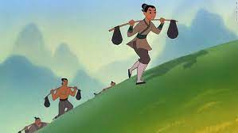
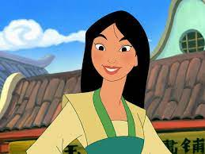
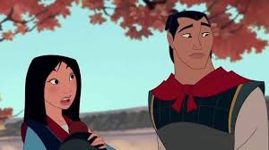
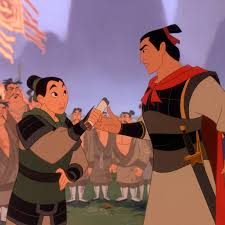
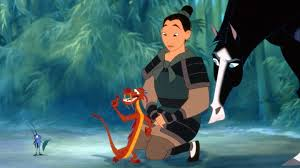
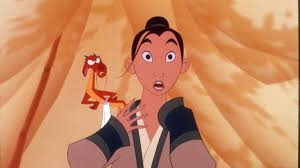
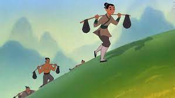
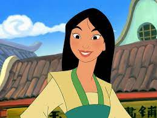
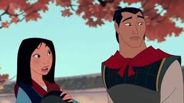
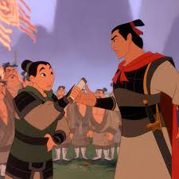
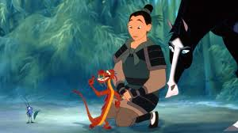
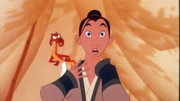
Meet the characters
Mulan

Mulan is always thinking about others over herself, which is clear from the start when she takes her father's place in the army, literally putting her life on the line for him. She grows in confidence throughout the movie and really begins to believe in her own talents and abilities. The fact she trains and takes it seriously to become the best warrior showcases her dedication.
Li Shang

Li Shang is the man in charge of the army in Mulan, and because his father is the army general he is desperate to impress. Li Shang takes his role seriously because of that, and at first, he is perhaps a little too strict on the others, but it does allow him to train them into shape.
Mushu
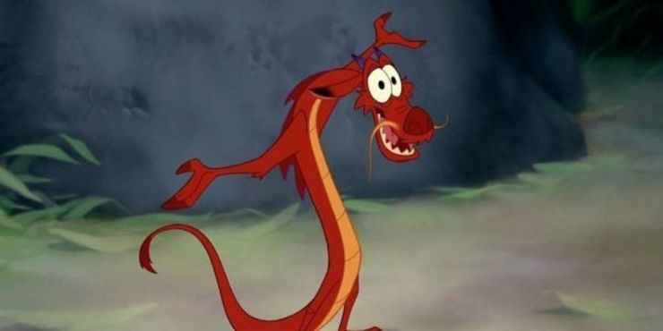When it comes to Disney sidekicks, Mushu is one of the very best. He's a hilarious character that is full of personality and charisma, which creates a lot of really funny moments throughout the movie with his great one-liners and witty comebacks. While Mushu can be a little bossy and sometimes gives Mulan poor advice, he does ultimately want what is best for her.
Crikee
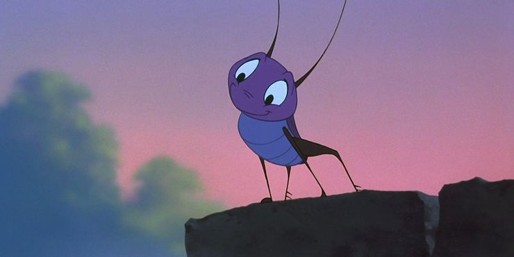Cri-Kee is along for the journey as a lucky cricket to help protect Mulan, and while he doesn't do anything of note to do that, she does stay alive. He's a classic Disney sidekick character who is always looking out for the main hero, doing whatever is needed throughout the movie.
Chien Po

Out of everybody that ends up in the army, Chien Po is by far the nicest, as he is always thinking of other people before himself and would much prefer to talk things out rather than fight about any differences. He is kind to Mulan from the start, which isn't the case with all of the characters, and the fact that he hates violence is also a very likable trait.
Ling
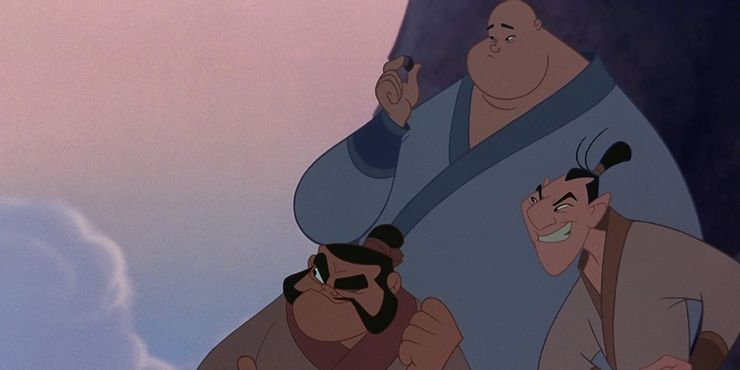Ling is another of the soldiers that Mulan gets close with, and he is the funniest of the trio. Ling is the real joker of the pack, and that allows him to stand out and seem very likable, as he is always trying to cheer other people up.
Yao
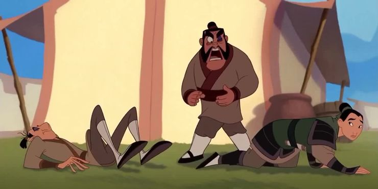Yao is one of three soldiers that Mulan ends up becoming good friends with during the movie, although Yao is one who makes her life difficult at the start. Early on he is a bully and likes to get into fights simply for the sake of it, wanting to show he's the toughest man around.
Fa Zhou

Mulan's father, Fa Zhou, already fought his war and represented his country, however, when he's called up Fa Zhou has no problem in stepping up and doing it again. Despite the fact he struggles to walk and knows the likely consequences that would come with him going to war again, it's something he is going to do until Mulan steps in.
Chi Fu
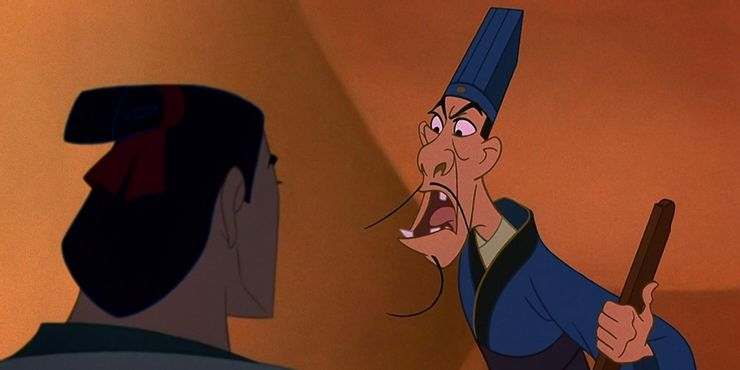Chi Fu is the Emperor of China's advisor. He's clearly someone who is very loyal and trustworthy. he is a very judgemental person who doesn't really treat Li Shang with any respect, despite the fact he's technically in charge.
Shan Yu

Shan Yu is simply evil, as the leader of the Hun army, he is set on taking over China and taking down the Emperor at all costs.